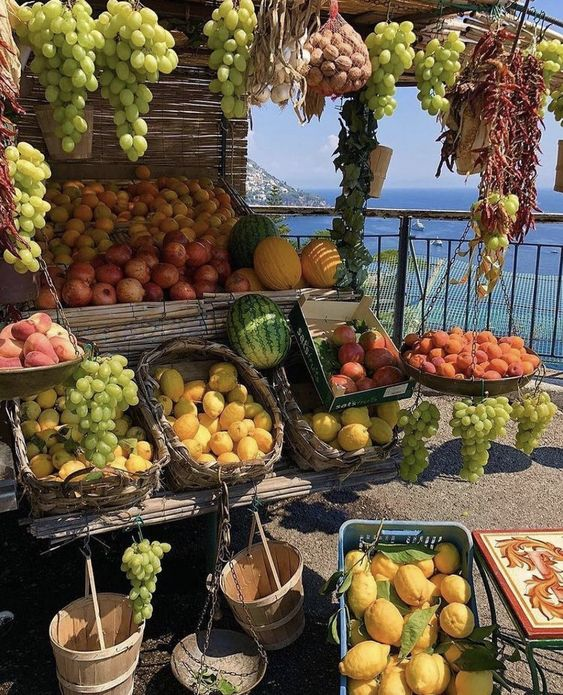
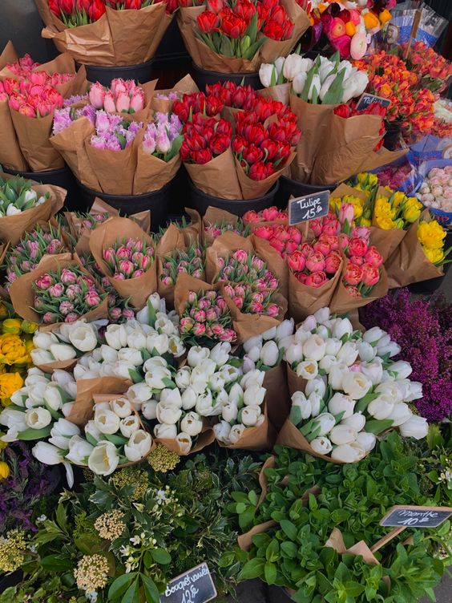
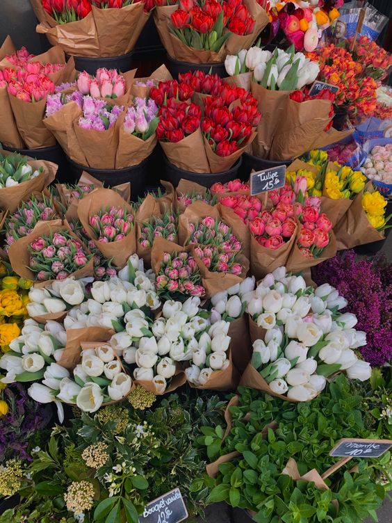
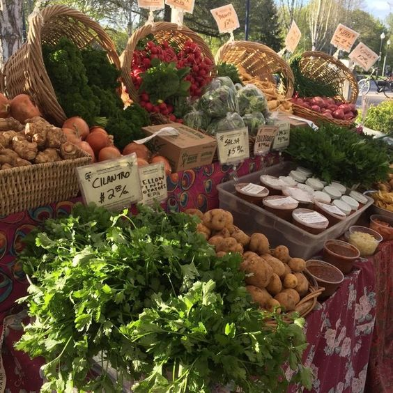

Explore Faerieland's marvelous marketplace
Fruit Market

Buy the most freshest fruits at the Faerieland fruit market stalls.
The most popular fruits selling are crimson cherries, ripe mango, Faerieland feijoas, and seasonal watermelons.
Locals, especially tourists, buy from these stalls but usually, they run out within a few hours of opening of the marketplace.

Flower Market
Or, purchase garden-fresh tulips and other types of flowers at the Faerieland flower market stalls.
The sweet fragrance of blossoming flowers will always emit from the stalls when people pass by, almost a way of persuading others to buy them for guilty yet good pleasure.
 

Farmers Market

The most busiest place in the entire marketplace, the Farmers Market, consists of verdant greens and tasty vegetables.
Sweet cherry tomatoes, plucked potatoes, crisp carrots, red radishes, cucumbers, and green snow peas are the most famous buys from the Farmers Market that sell out fast, so come quick!


 Back
Back